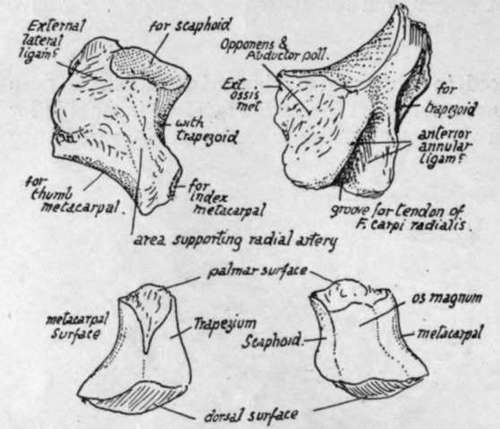
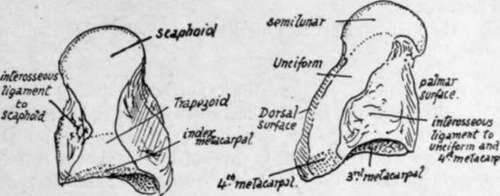

Scaphoid (Fig. 86). Continued
Description
This section is from the book "The Anatomy Of The Human Skeleton", by J. Ernest Frazer. Also available from Amazon: The anatomy of the human skeleton.
Scaphoid (Fig. 86). Continued
The front surface is on the whole somewhat flattened, giving attachment to ligaments and to Opponens and Abductor pollicis, and insertion at its outer part to Extensor ossis metacarpi. Its inner margin forms a prominent ridge for attachment of superficial fibres of the anterior annular ligament, and this overhangs a well-marked groove containing tendon of F. carpi radialis and bounded below by a smaller ridge for deeper fibres of the ligament : thus the tendon might be described as passing through the outer attachment of the annular hgament (see Fig. 84). The surface carrying the groove looks inwards and forwards towards the palm, and the groove is directed towards the base of the index metacarpal.
Fig. 88.-Upper figures, left trapezium : i, posteroexternal aspect; 2, palmar aspect. To distinguish left from right, hold the bone so that the deep groove for Fl. carp. rad. is in front and near the proximal part of the bone, running towards the index finger, while the concavo-convex facet for first metacarpal looks toward the thumb. Lower figures, left trapezoid : 1, outer and 2, inner views. To distinguish the sides, place the smaller non-articular surface in front, with the pointed downward prolongation from it toward the outer side ; of the two articular areas between which this prolongation lies the larger saddle-shaped one should look toward the index finger, and the smaller convex one outwards. (See text).
The postero-external surface is roughened by ligaments and supports the radial artery as it runs to the first intermetacarpal space.
Trapezoid
-Difference in size between anterior and posterior surfaces is well marked : increase in dorsal surface particularly in a downward and inward direction, while the rough anterior surface is drawn into a lower and outer point, fitting as a roughened angle between the facets for trapezium and index metacarpal (Fig. 88).
This bone only supports one metacarpal, and its lower surface is moulded into a concavo-convex form to fit the deeply-grooved base of this bone. Outer facet for trapezium is convex, and upper one for scaphoid is shghtly concave, and these two are directly continuous, as is the upper one with that on the inner side for os magnum, and this again with the lower facet. In fact all the facets form a continuous articular surface round the bone, only partly interrupted in front and externally by the pointed prolongation of the anterior surface.
Os Magnum
A large dorsal surface coming obliquely to a point directed downwards and inwards and narrowing proximally to give the appearance of a neck supporting the upper articular head : front surface smaller, irregular, roughened for ligaments. Outer surface with two facets, partly continuous, for scaphoid and trapezoid, but with a hollow area between them on the palmar side for an interosseous ligament. Inner surface rather flattened, with facet for unciform extending along its posterior part, but roughened in front of this for interosseous ligament: this is the strongest of these ligaments in the hand, and has the largest surface of attachment.
The lower surface has a main facet for the middle metacarpal, and on each side of this a smaller one for the neighbouring metacarpals : that for the fourth metacarpal is small and confined to the back part of the surface, for the front portion is taken up by the large interosseous band, which not only ties the os magnum to the unciform, but also to the fourth metacarpal.
The obliquity of the distal border of the dorsal surface is a consequence][ot the presence of the styloid process on the middle metacarpal, and the dorsal surface may present a bevelled-off portion to receive this.
Fig. 89.-Left os magnum. From the outer and inner sides. To tell left from right, hold the round head proximally, the larger non-articular surface dorsally, and the abruptly flattened side inwards.
Unciform
Recognised at once by the prominent hook on its palmar aspect, from which its name is derived. This process forms part of the inner wall of the flexor sheath, so is concave externally. The concavity is in relation with the synovial covering of the flexor tendons of the little finger : the tip gives attachment to the annular hgament : the convexity outside the tip affords origin to the Opponens distally and Flexor brevis minimi digiti proximally : the upper border has the piso-unciform ligament attached to it, and the lower border has fibres of Opponens arising from it. The inner and lowei part of the process is grooved by the deep ulnar nerve turning round it : the artery takes a wider sweep, and so changes its relation to the nerve (see Fig. 87).
Above the hook the front surface is for ligamentous attachments, and further in is covered by the fibres that connect the pisiform and inner metacarpal bases.
Outer surface with facet behind for os magnum and roughened in front of this for interosseous ligament. Lower aspect has a continuous articular surface showing two facets separated by a low crest, for the fourth and fifth metacarpals. Upper or supero-internal surface carries a concavo-convex facet for cuneiform, and, external to this, is prolonged proximally to an angle which articulates with semilunar. Dorsal surface large and roughened for ligaments. Inner surface, nearly reduced to a point, gives attachment to ligaments.
Observe that the unciform process marks by its lower edge the line of the carpometacarpal articulation.
Much of the position of the carpus can be appreciated during hfe, and many of its bones examined. On the front aspect, the tuberosity of the scaphoid is felt at the proximal end of the thenar eminence, deep and external to the radial flexor tendon where this disappears. The trapezium is covered by the thenar muscles, but can be indistinctly felt through these just distal to the scaphoid : metacarpal movement to and fro does not affect the mass thus felt. The hne which curves round and limits the upper end of the thenar eminence passes over the scaphoid-trapezium joint, so that the scaphoid tuberosity is found between this hne and the distal one of the two deep creases which cross in front of the wrist. The pisiform is easily felt a httle below this last line, at its inner end and in the base of the hypothenar eminence. Between the pisiform and scaphoid, the proximal convexity of the curved upper margin of the carpus reaches the middle third of the upper of the two transverse deep fines, sc that this line can be taken as giving that of the wrist-joint: this part of the carpus cannot be felt, of course, being covered by flexor tendons, but it may be noted that the semilunar lies in the middle, between the two transverse creases. The hook of the unciform can be felt on pressing below and external to the pisiform, and a hne drawn out from its lower edge marks the lower level of the carpus.
The presence of tendons interferes with recognition of the separate bones on the dorsum, though they may sometimes be made out in thin hands. The carpus, as a whole, lies between the bases of the metacarpus and the lower end of the radius, both of which lines can be found. The joint between os magnum and semilunar hes about halfway between the base of the third metacarpal and the end of the radius (see Fig. 93). Trapezium and part of scaphoid lie in the floor of the area between the long and short extensor tendons of the thumb.
Continue to: